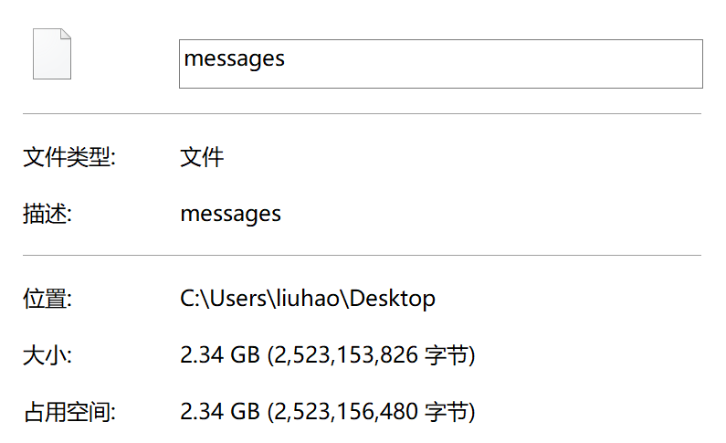
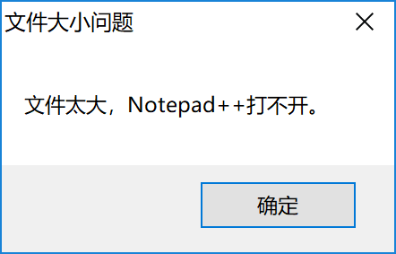
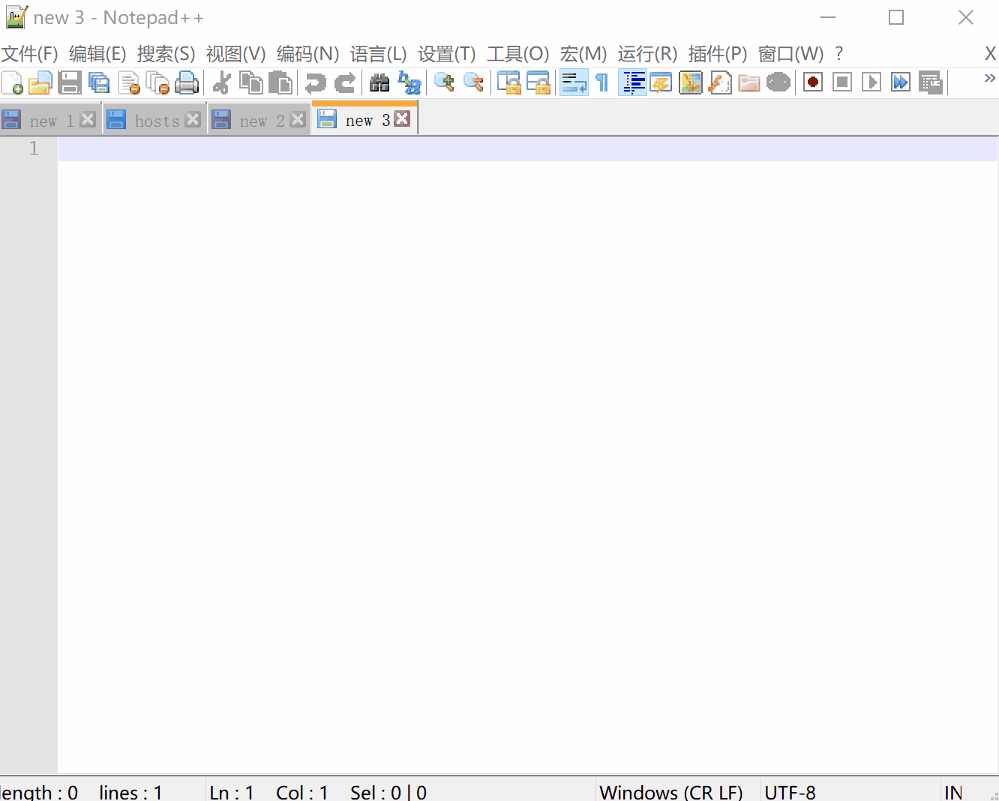
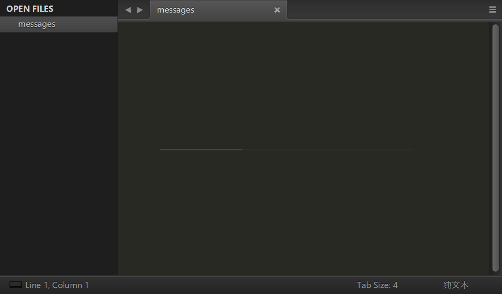
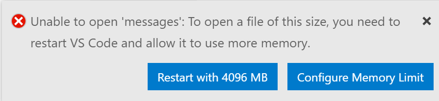
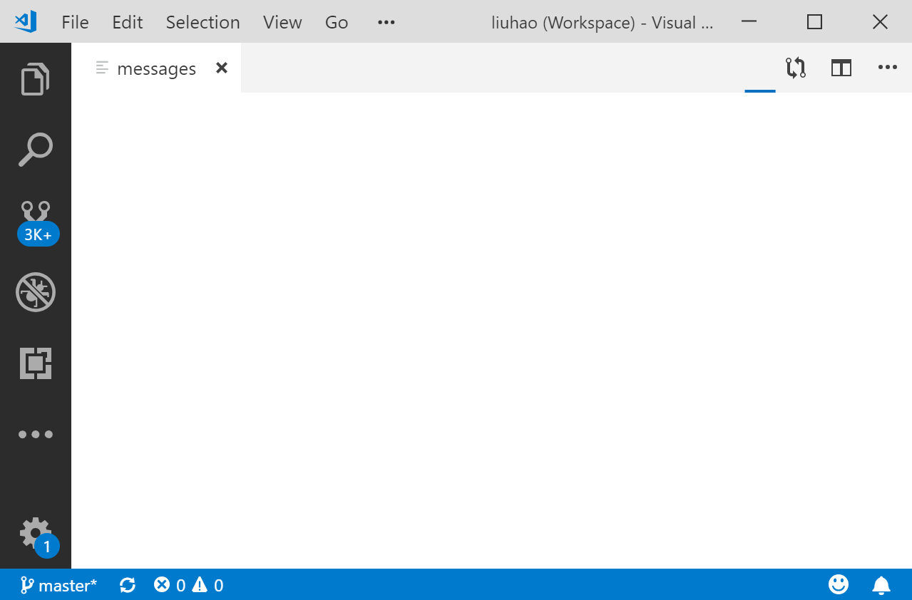
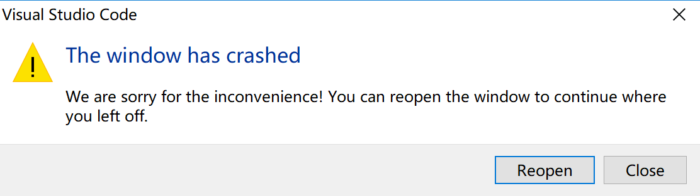
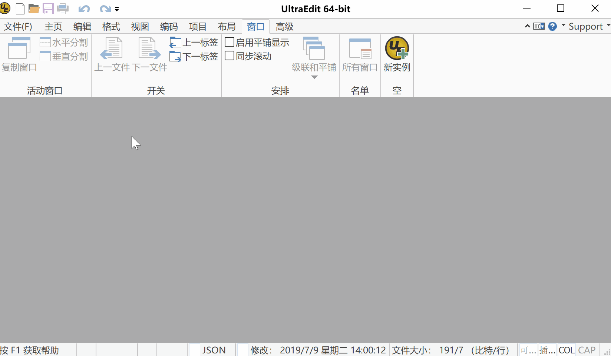
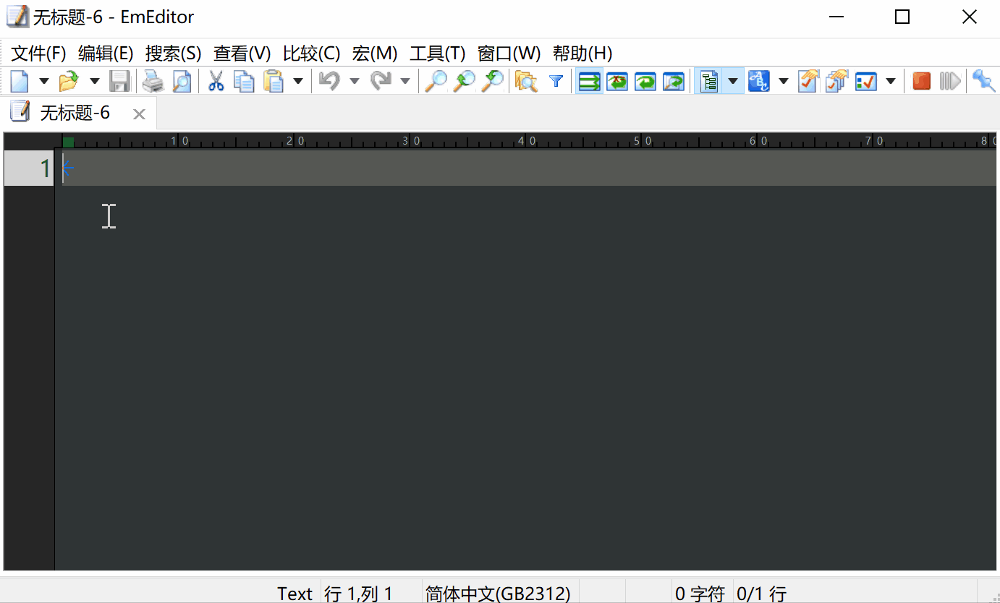

原文连接:https://www.cnblogs.com/hoxis/p/11393845.html
工作中，偶尔需要编辑一些大文件，比如 log 文件，后者一些变态的 SQL，此时用平常的编辑器就会显得力不从心，要么直接打不开，要么打开后卡得要死。
本文就给大家推荐几款可以操作大文件的编辑器，准备好小板凳，开始吧。
本机配置：Windows10，16G 内存，i5 处理器。
Notepad++
第一站，就拿我本机的记事本替代者 Notepad++ 开刀。
网上传闻 Notepad++ 打开大文件不佳，Notepad++ 可以打开 600M 左右的文件，大于 700M 就直接无法打开了，一般 >400m 就会卡死。
那么它的真实体验如何呢？
于是就从服务器上，找来了一个 2.3G 大小的文件来进行测试。

将其拖到 Notepad++ 中，直接不行：

那我们拿一个小点的，200M 多点的文件再试一下
结果呢？

大家隔着屏幕，应该无法感受我在电脑前的感受
打开用了好几秒，打开后无法滚动，我的鼠标都快滑烂了
好不容易能上下拉了，没拉几下，还卡死了！
直接程序无响应了！
Notepad++ 是很优秀，但是在打开大文件方面，简直是一塌糊涂！
超过 100M 的文件，用 Notepad++ 打开时，请慎重！
Sublime Text
下面我们用很多人都喜欢的 Sublime Text 来试下。
首先，比 Notepad++ 好的地方是，2.3G 的文件起码是能打开的
没有报错
但是，Sublime Text 开始加载文件了

我大概计了个时
加载 2.3G 的文件，一共用了 4 分多钟
我就一直盯着加载页面
不过总算加载完了
正当我准备滑动我的鼠标查看文件时

再看一眼 Sublime Text 的内存占用情况
看得出来，它是一次性将文件全加载到内存中了
所以，Sublime Text 也是很优秀，但是打开大文件，同样一塌糊涂。
VSCode
编辑器界的新秀 VSCode 在大文件方面又能表现如何呢？
当我把文件拖入到 VSCode 时，弹出了如下提示

按照提示进行重启后，再次尝试打开文件

就一直处于加载中
加载一段时间后，又弹出了这个页面

后又多次尝试打开，均以失败告终
所以，VSCode 打开大文件，失败！
UltraEdit
现在再来试一下老牌的 UltraEdit，网上说它是可以打开大文件的，那我们就看下到底表现如何。

打开有了几十秒的时间，并且打开过程中卡死
但是打开后，文件浏览起来还是很顺滑的。
直接进行编辑好像也没什么问题
但是当我使用 ctrl+z 进行撤销操作，或者进行文件保存时
还是卡住了
我们发现，其实 UltraEdit 内存占用很小，这种情况下，仍然能够顺滑浏览大文件，难道是因为我的 SSD？
总之，UltraEdit 要比 Notepad++ 和 Sublime Text 表现要好多了。

EmEditor
好了，做了这么多铺垫，到了主角出现的时候了，它就是：EmEditor
EmEditor 是一个比较小众的编辑器，当年实习时，只有当年实习时看到指导老师用过，此后多年，没再看到过它的身影。
知乎上甚至还有一个问题：为什么用 EmEditor 的人不多？
回答者对其的评价颇高，有人甚至称其为：Windows平台下最棒的文本编辑工具！没有之一！
评价都是『幸存者偏差』，我们不过多关注，到底怎样，拉出来溜溜

1、加载大文件，没有出现卡死的情况；
2、浏览文件，同样顺滑；
3、编辑大文件，不费力气；
4、保存时，出现短暂卡死的情况；
总之，这是今天所有测试下来，大文件打开表现最优秀的一个。
总结
本文并没有比较各个编辑器的意图，所以对于各个编辑器的优劣不做评价。
本文只是实验在大文件编辑的情况下，到底谁的表现更为突出。
综合结论：EmEditor ≈ UltraEdit > Sublime Text ，VSCode 和 Notepad++ 无法打开大文件，不参与排名。
另外，也许还有其他更为优秀的工具，比如 Vim 其实也可以用来编辑大文件，小编认知有限，大家可以留言推荐。